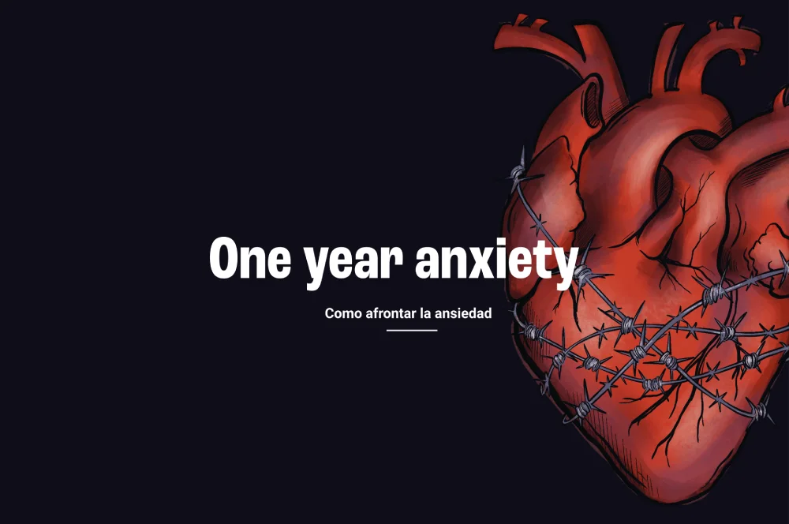

One year Anxiety Proyecto
"One Year Anxiety" es un proyecto personal de ilustración y que posteriormente evolucionó para la asignatura de Diseño de la Información. En él, utilizo la ilustración y fotografías de mi día a día 📸 para expresar y representar uno de los años más difíciles de mi vida ❤️🩹. El objetivo principal fue liberar la ansiedad de forma creativa ✨ y visibilizar una realidad que, a menudo, las redes sociales a veces prefieren maquillar. Más adelante, adapté este camino visual a Figma, integrando textos que aportan contexto 📖. Este proyecto comenzó en 2023 y culminó durante el 4º curso de Grado en Diseño Gráfico en la Escuela de Arte y Superior de Diseño de Sevilla
Behance